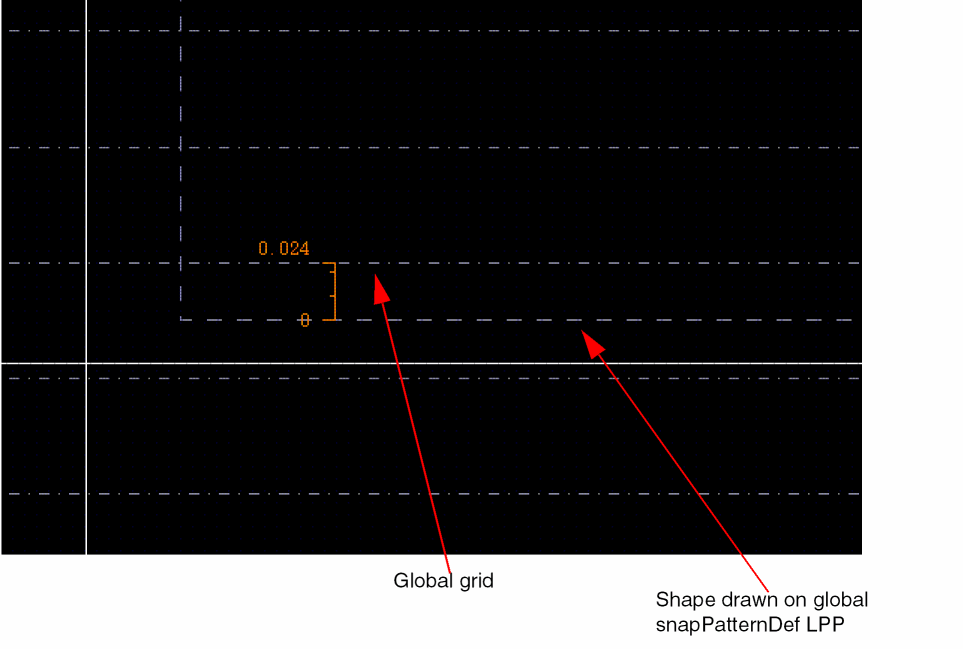
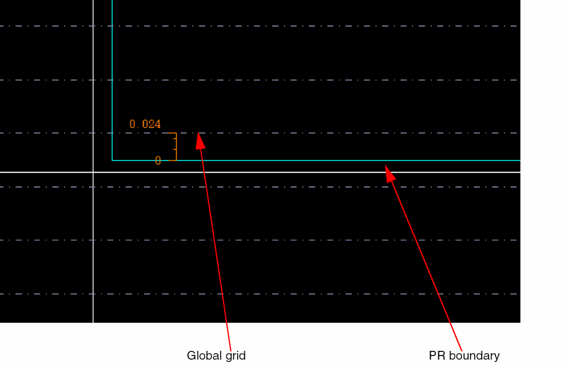
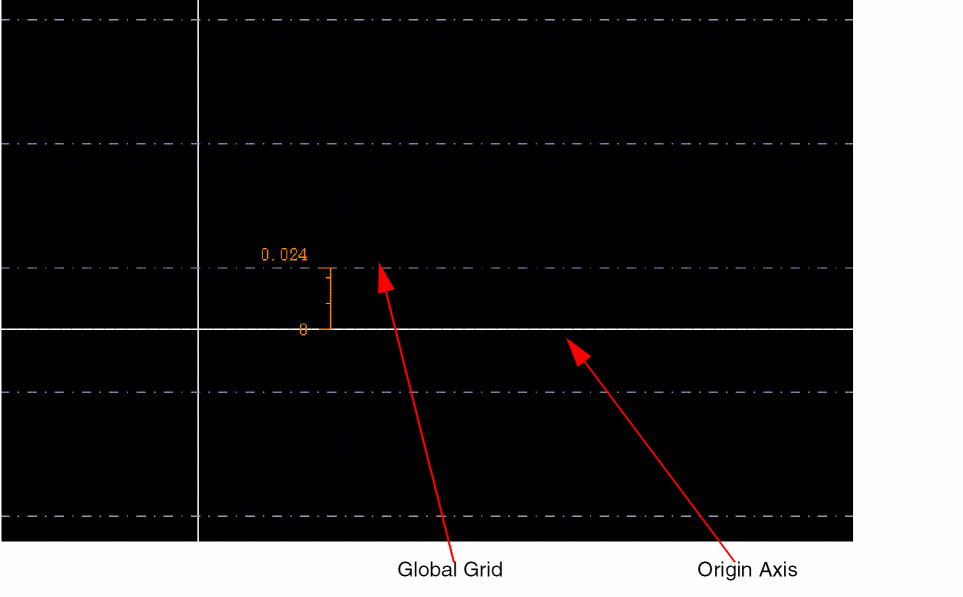

Global Grid Anchoring
The global grid is anchored in the following order of priority:
You can enable or disable the global grid anchoring using the snapPatternGlobalGridAnchoring environment variable. When the global grid anchoring is disabled, the global grid is anchored to the origin axis.
The following are a few examples of global grid anchoring:
-
Anchoring by shape on global snapPatternDef LPP: The vertical grid is anchored to the lower edge of the drawn shape. In the example below, an offset of 24nm is shown.
 -
Anchoring by PR boundary: If no shape is drawn on global grid LPP, Virtuoso looks for a PR boundary. If it is found, then the global grid is anchored to the lower edge of the PR boundary.
By default, the PR boundary snaps to the least common multiple of the grid values in the X and Y directions. You can use the boundarySnapXGridsand boundarySnapYGridsenvironment variables to override the default behavior and snap the PR boundary to the specified grids in X and Y directions, respectively.
When the creation method for PR boundary is Rectangle, both the edges on the X and Y axis are snapped. However, when the creation method for PR boundary is Polygon, all points are snapped. When the creation method for PR boundary is From Selected Set and the Rectilinear option is not selected, the bounding box is snapped.
During creation, only the outer edges of the rectilinear PR boundary snap to the grids. During stretch, all the selected edges, inner or outer, of the rectilinear PR boundary snap to the grid.
For editing command, the PR boundary snaps with the snap boundary as reference, if dbGetGlobalGridOffsetReferenceType of the cellview is specified asboundary. If the drdEditSmartSnapAllowedWidthSnap environment variable is specified and the placement grid is present in the design, these settings are prioritized for snapping.
The PR boundary snaps to the global grid irrespective of global grid offset reference being set to boundary or origin. A virtual hierarchy that has an area boundary snaps similar to the PR boundary. -
Anchoring by Origin Axis: If a PR boundary, snap boundary, or a drawn shape on LPP is not found, then the global grid is anchored to the origin axis.

Global snapping is done similar to local snapping. When you move an object in a design, if the object overlaps the local snap pattern shape, then the object snaps to the local snap pattern shape. However, if no local snap pattern shape is found, then the object snaps to the global snap pattern grid.
Related Topics
Object Snapping to Global Snap Pattern Grid
Return to top